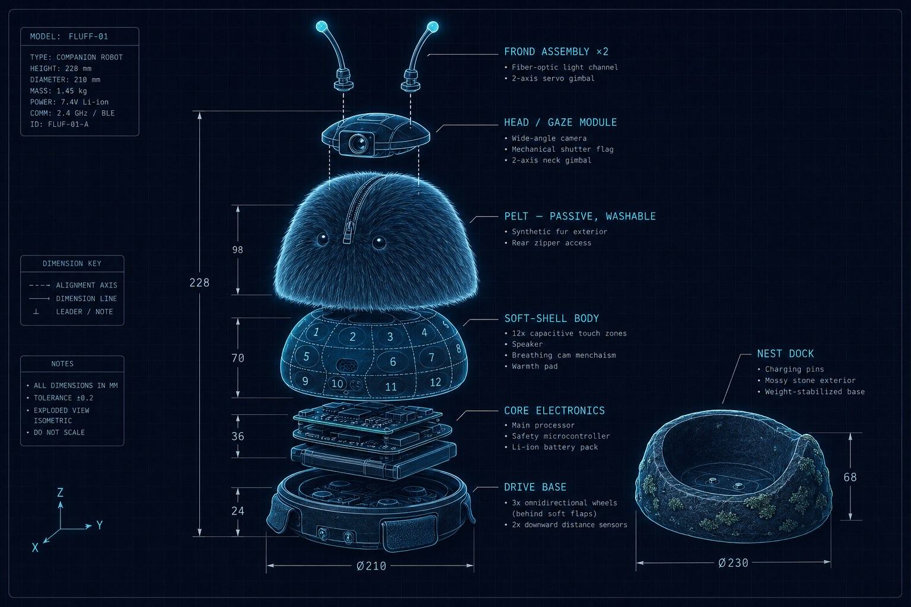
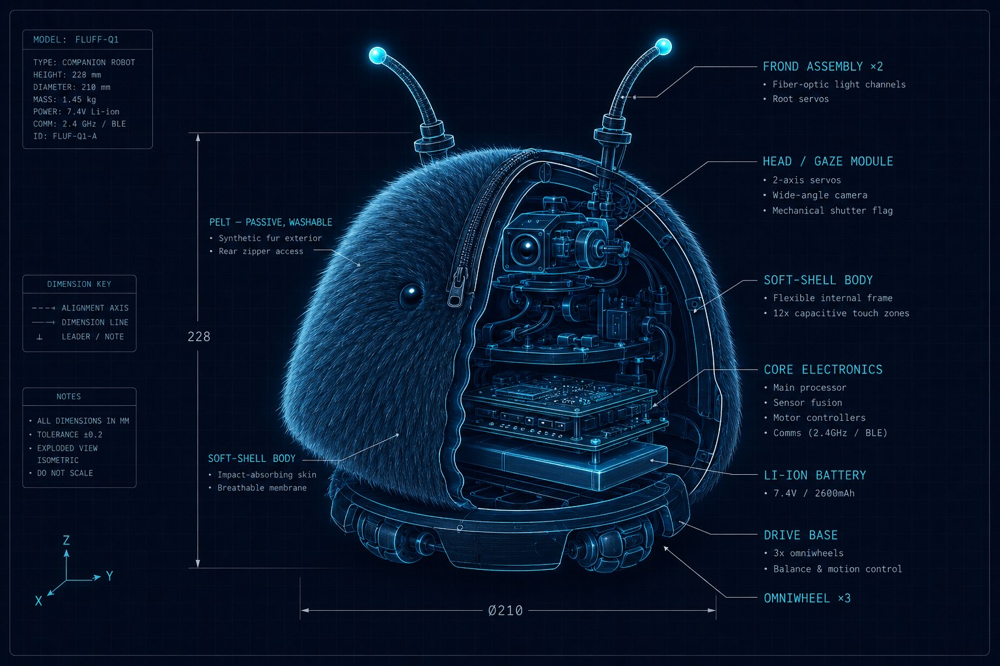
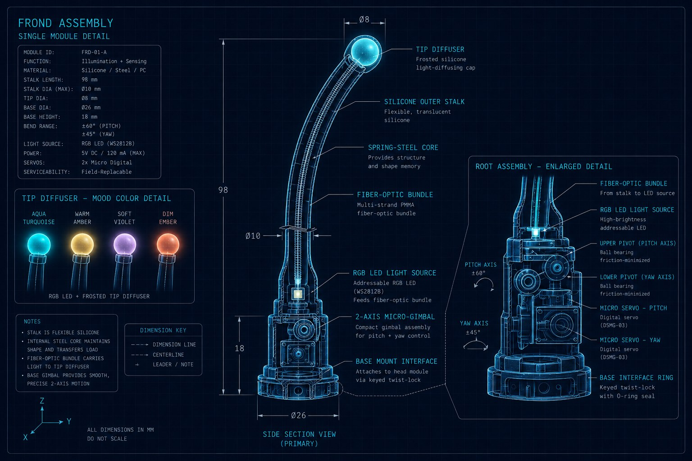

Yura · component architecture v0.1 · July 2026
Seven assemblies, one hard rule: the safety MCU owns the motors, the SoC owns the mind, and nothing hard sits within reach of a squeeze. Concept-stage architecture — candidate parts named so they can be argued with, not a locked BOM.
01 · System
Top to bottom, in the order you'd take Yura apart. The pelt unzips first; every assembly below it is a replaceable module — screws and connectors, no structural glue.

Exploded view — 228 mm stack, Ø210 mm base · tap to open full size
Silicone-cored stalks, fiber-optic light pipe, 2-axis micro-actuation per frond. The emotional display.
2-axis neck, wide-FoV camera behind the fur brow with mechanical shutter, passive bead eyes, mic array ring.
30 mm plush pile, fully passive — no wiring in the washable layer. Wraps everything below the frond tips.
Compliant shell carrying touch electrodes, breathing mechanism, warmth pad, purr driver, speaker.
Mainboard (SoC + NPU), safety MCU, power system, radios. The only rigid mass, suspended center-low.
Three omniwheel modules behind compliant fur flaps, floor sensing, bumper ring.
Charging crater with IR homing beacon. Where Yura sleeps and dreams.
02 · Assemblies

Cutaway — how the assemblies pack inside the fur · tap to open full size
Each frond is a molded silicone stalk over a spring-steel core, driven at its root by a 2-axis micro-gimbal. Light comes from an addressable RGB LED at the base firing into a fiber-optic bundle that terminates in a molded tip diffuser — no electronics above the root, so a chewed or snagged frond is a $4 replaceable part, not a board repair.
2× metal-gear micro servo (quiet-tuned) per frond SK6812-mini RGB at root fiber-optic bundle + tip diffuser spring-steel core, silicone overmold snap-fit root mount
Frond module detail — section view, root gimbal, and the four-color mood tip · tap to open full size
The 2-axis neck carries gaze — the single most life-giving motion, so it gets the best servos in the build. The camera hides behind a fur brow with a solenoid-driven mechanical shutter flag; when Yura sleeps, the shutter is physically closed, not just software-off.
2× coreless metal-gear servo (pan/tilt) 5 MP 120° camera, MIPI-CSI, IR-cut solenoid shutter flag 2× glass bead eyes (passive) 4× PDM MEMS mic ringDeliberately dumb: the washable layer carries zero electronics. Touch sensing lives on the shell beneath it, tuned to read through 30 mm of pile. Colorway and pelt-series SKUs are pure soft goods — the entire accessory line requires no electrical qualification.
30 mm plush pile, anti-pill concealed zipper, fur-baffled elastic hem at drive skirt machine washable, line dryA compliant TPU-and-foam shell over a minimal frame. Twelve capacitive electrode zones are printed on the shell surface (conductive coating), read by a single touch controller. The breathing mechanism is a slow cam on a micro gear motor; the warmth pad is a self-regulating PTC film with an independent thermal fuse.
TPU/foam compliant shell 12-zone printed capacitive array + controller breathing cam on micro gear motor PTC warmth film + thermal fuse LRA purr driver 28 mm full-range speaker + passive radiatorOne mainboard, one safety MCU, one battery. The SoC is phone-class with an NPU big enough for on-device face recognition, speaker ID, and wake-free voice activity — the offline-complete instinct layer. The MCU is the reflex arc and the only thing allowed to enable motor power.
SoC: RK3588S / QCS6490-class, ~10 TOPS NPU 4 GB LPDDR4X · 32 GB eMMC Wi-Fi 6 + BT5 module safety MCU: STM32G4-class 3.7 V 5,000 mAh Li-ion + BMS/fuel gauge USB-C service port + dock pogo pads IMU (BMI270-class) · ambient light · dock IR receiverThree omniwheel modules — N20 gear motors with magnetic encoders on TPU-hubbed wheels — give the signature glide with no steering geometry. The wheels sit behind compliant fur flaps that simply go limp when lifted: the lift experience Lovot pioneered, achieved passively, without an active retraction mechanism (see the patent caution on the Market page). Two downward time-of-flight sensors watch for edges and stairs.
3× N20 gear motor + magnetic encoder 3× 48 mm TPU-hub omniwheel triple H-bridge driver w/ current sense 2× VL53L4-class floor ToF compliant wheel flaps (passive) soft bumper ringA weighted crater the drive base settles into — self-docking via IR beacon, charging via pogo pads. Styled as a mossy stone so it reads as habitat, not charger.
pogo charge pads (5 V / 2 A) IR homing beacon USB-C PD wall supply felt-lined crater, weighted base03 · Electronics
| Bus / signal | Connects | Notes |
|---|---|---|
| MIPI-CSI | Camera → SoC | Raw video never leaves the SoC; frames are processed and discarded on-device |
| PDM / I2S | Mic ring → SoC · SoC → codec/amp → speaker | VAD and speaker ID run on the NPU; no wake word needed |
| I2C | ToF ×2, IMU, ambient light, touch controller, fuel gauge | Single bus, address-mapped; IMU also mirrored to MCU via SPI for reflexes |
| PWM | MCU → 6 servos (neck ×2, fronds ×4) + LED driver | Expression actuation is MCU-timed so it never stutters under SoC load |
| UART + GPIO | SoC ⇄ safety MCU | Intent messages down, sensor summaries up; heartbeat both ways, hardware watchdog |
| Motor enable rail | MCU → H-bridges | The one non-negotiable: only the safety MCU can energize motion |
| Load | Typical | Peak |
|---|---|---|
| SoC + NPU + radios | 2.5 W | 6 W |
| Drive motors | 1.5 W roaming | 4 W |
| Servos (neck + fronds) | 0.4 W | 1.5 W |
| Frond LEDs + audio | 0.5 W | 1.2 W |
| Warmth pad (duty-cycled) | 0.8 W | 2 W |
| System | ≈ 3.5–4 W average | 18.5 Wh pack → ≈ 5 h roaming ✓ |
Sanity check: the 5,000 mAh · 3.7 V pack (18.5 Wh) supports the concept page's ~5 h roaming claim at ~3.5–4 W average draw, with sleep-on-nest drawing under 0.3 W.
04 · Safety split
05 · Software map
| Layer | Runs on | Components |
|---|---|---|
| Reflex | MCU · RTOS | Touch response, startle, edge/fall/lift handling, motor arbitration, servo timing, watchdog |
| Instinct | SoC · embedded Linux | Mood engine (valence/arousal/energy/social), drive scheduler, face recognition, speaker ID, VAD + transcription, navigation, gaze planner, song synthesizer |
| Cognition | Cloud · optional | LLM appraisal of transcripts → animal-vocabulary intents; nightly dream consolidation → people graph, routine model, personality drift; dream journal generation |
| Companion app | Phone | Dream journal, memory inspect/delete, privacy toggles, pelt registration, firmware updates |
Update posture: the MCU firmware is safety-certified and changes rarely; the SoC stack updates over the air; the cloud layer ships continuously. The end-of-life pledge (final firmware unlocks the best local-only brain) is an SoC-side deliverable planned from day one.
06 · Build notes
YURA · component architecture v0.1 · July 2026 · concept → · market →